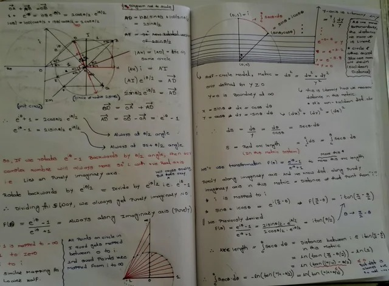
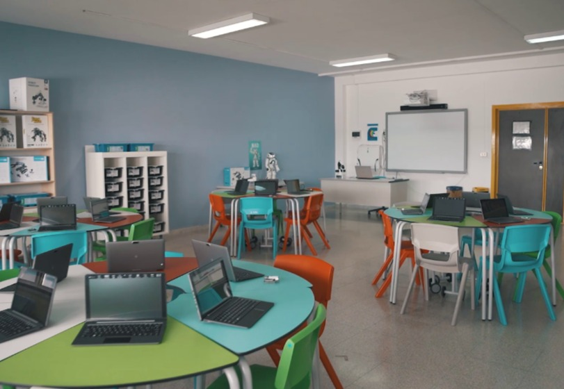

IL LICEO MATEMATICO
LOGICA • COLLABORAZIONE • FORMA MENTIS
Buongiorno a tutti. Oggi vorrei illustrarvi le competenze fondamentali che ho sviluppato grazie al percorso del
Liceo Matematico, un indirizzo che va ben oltre il semplice calcolo, allenando una vera e propria forma mentis. La
matematica avanzata e la logica non ammettono approssimazioni: richiedono un'altissima attenzione ai dettagli,
trasformando il rigore in uno strumento di interpretazione della realtà.


Lavoro di squadra
Le attività si basano sulla ricerca e sulla risoluzione di problemi in gruppo. Questo mi ha insegnato a collaborare in modo produttivo, a confrontare approcci logici diversi e a comprendere che i risultati migliori si ottengono unendo le intuizioni e le competenze di ciascun membro del team.
Precisione e calma
Di fronte a problemi complessi che non tornano al primo tentativo, ho imparato a mantenere la calma, a gestire la frustrazione e ad analizzare la situazione con lucidità e pazienza per trovare tempestivamente una nuova strategia risolutiva.
“I risultati migliori si ottengono unendo le intuizioni e le competenze di ciascun membro del team, affrontando le sfide con assoluto rigore analitico e pazienza.”
In conclusione, il Liceo Matematico mi ha fornito un bagaglio che unisce il rigore analitico alla capacità relazionale.
Torno da questo percorso con una forte attitudine al problem solving di gruppo e con l'autocontrollo necessario per affrontare sfide complesse, doti che ritengo perfettamente spendibili in qualsiasi contesto futuro. Grazie per l'attenzione.